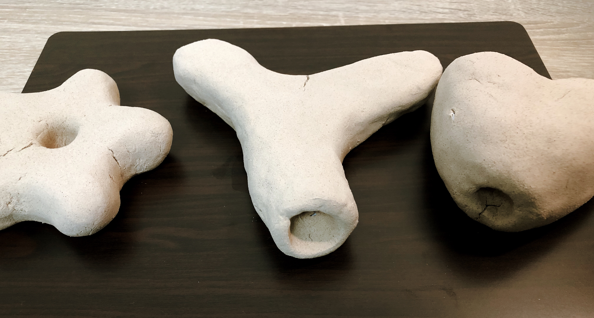
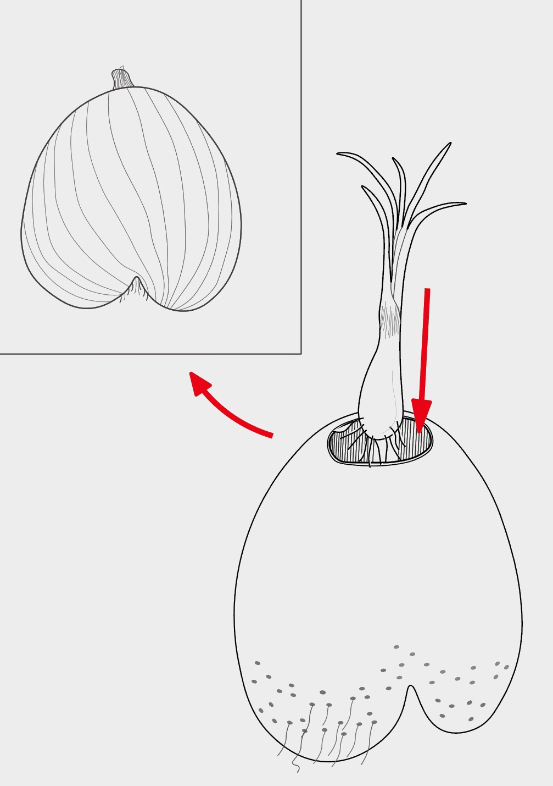
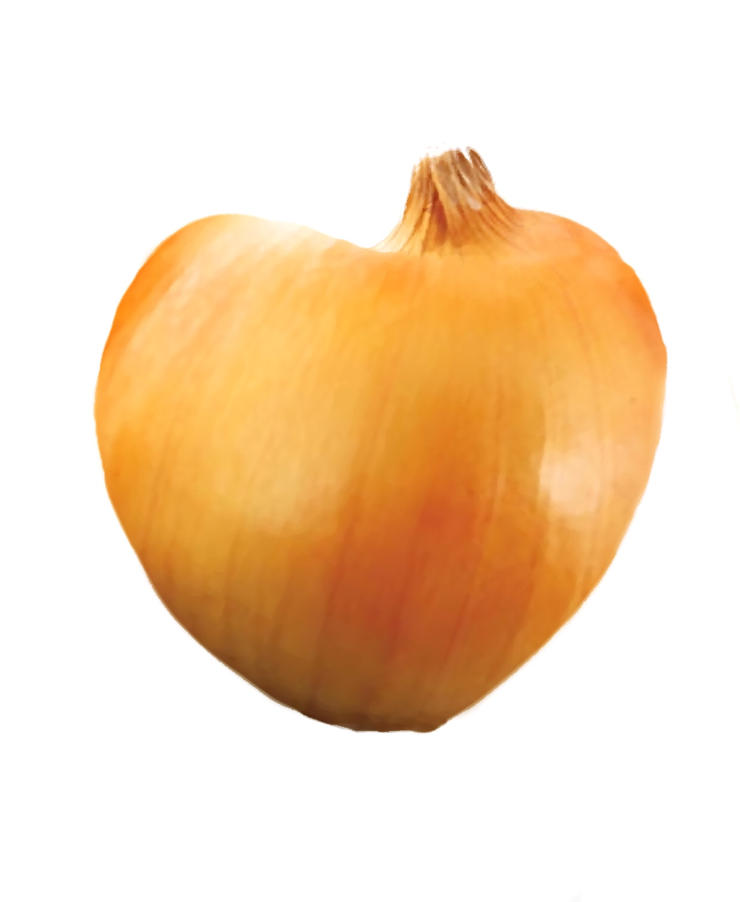
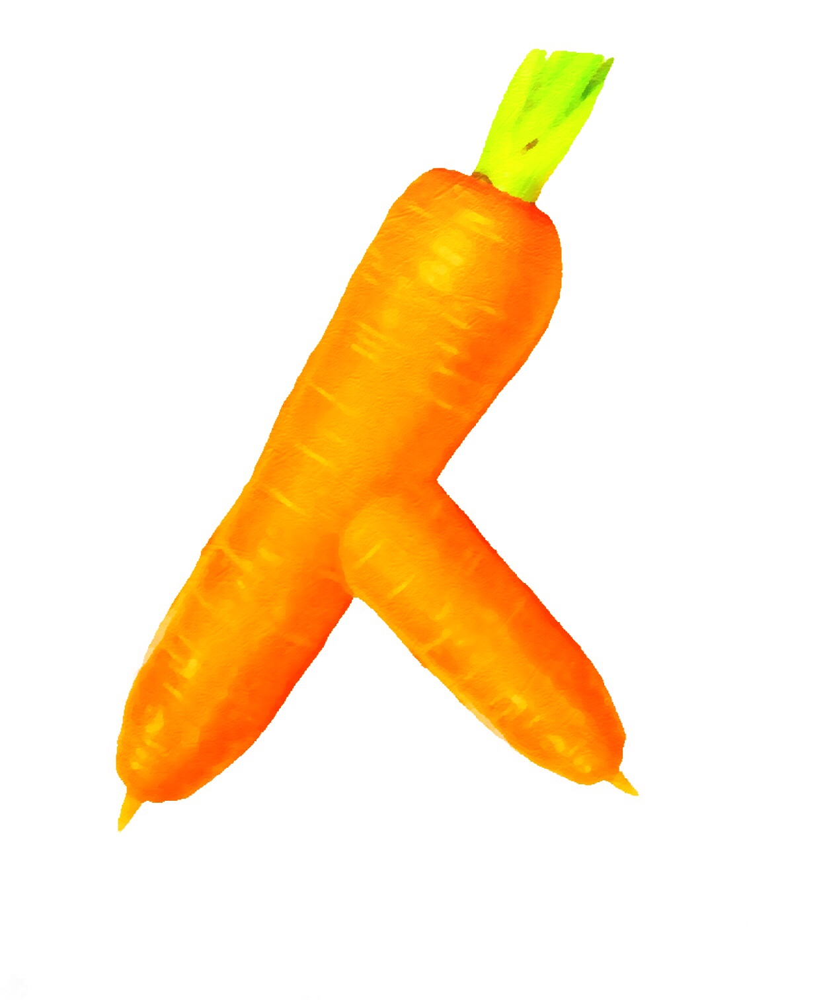
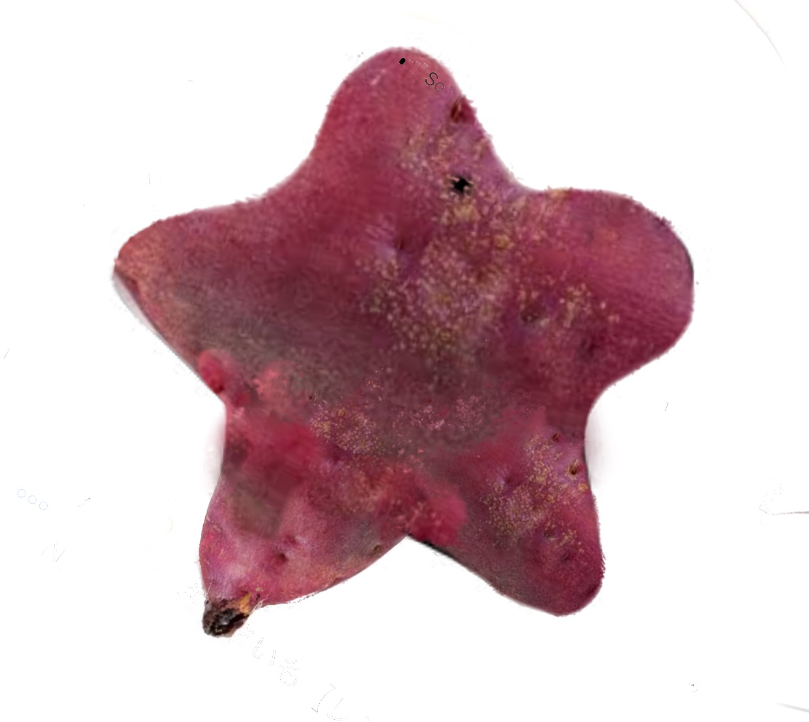
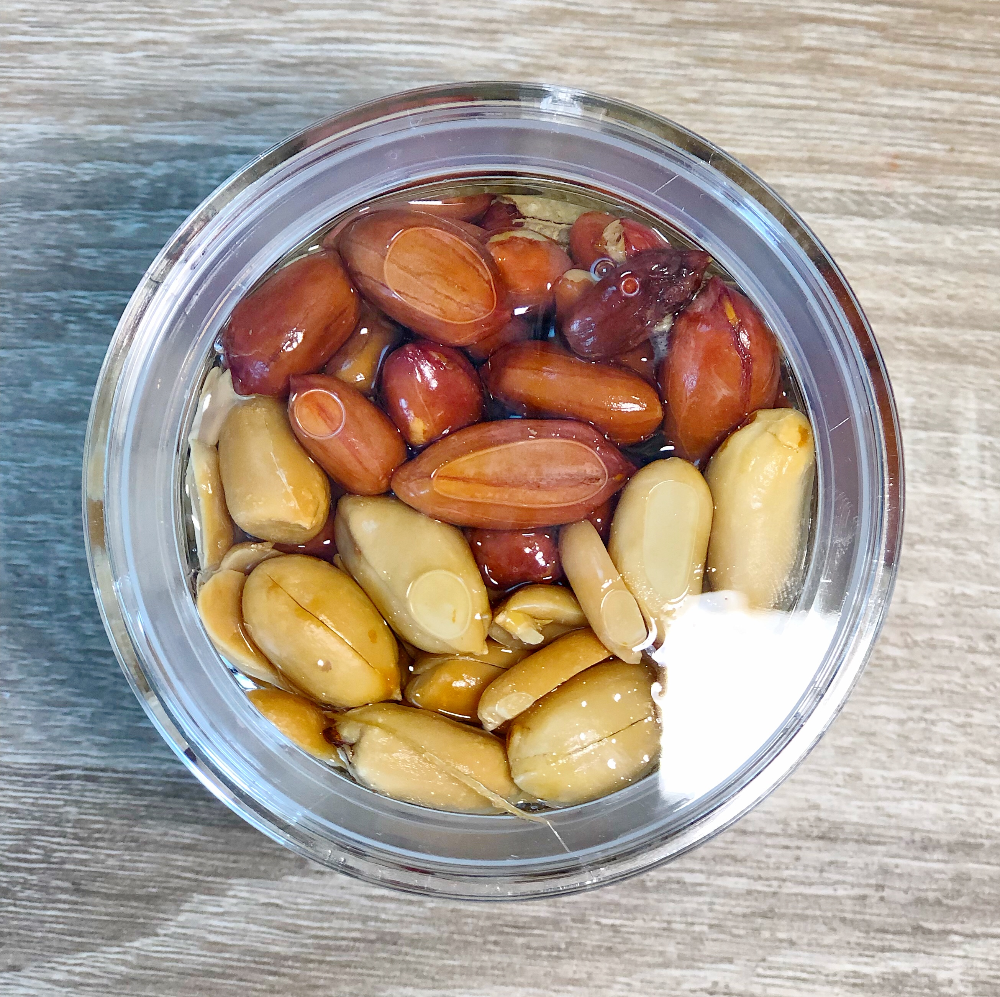
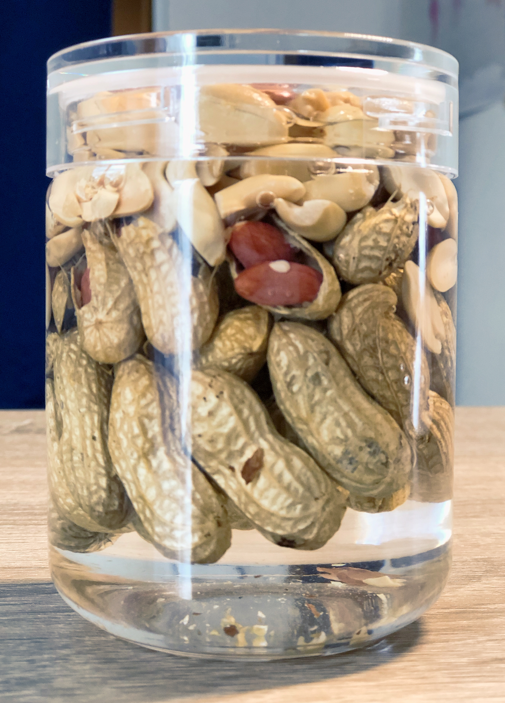
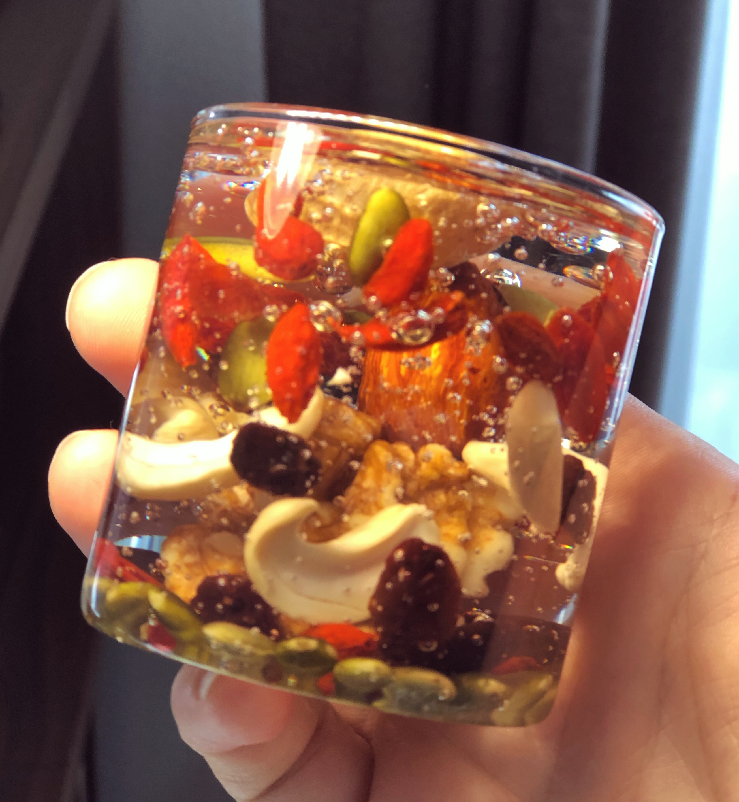
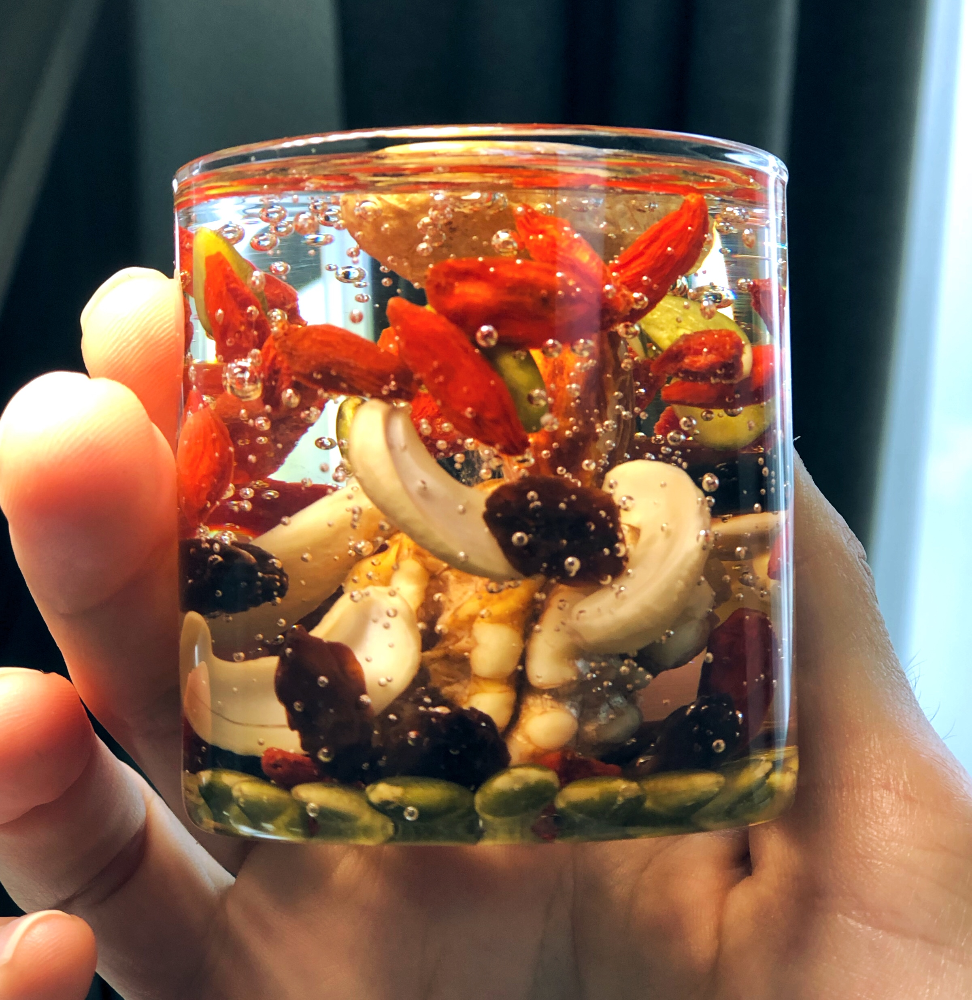
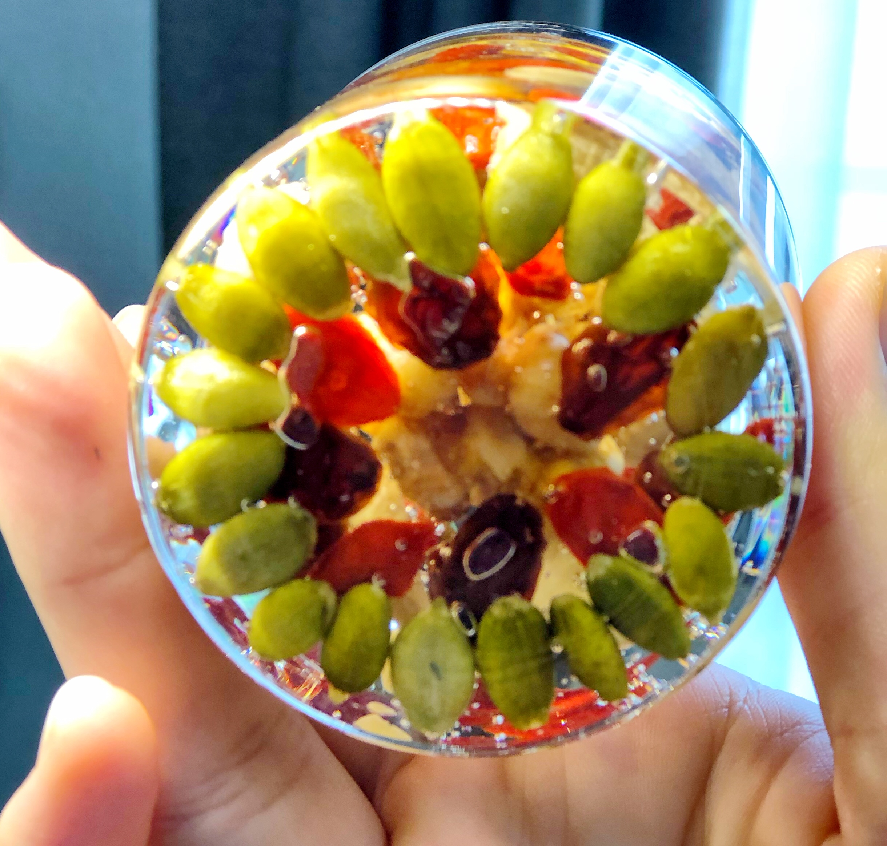

  
テクニカルプロトタイプ 1
廃棄食材でつくる消しゴム
結果：失敗
ロトタイプ・プロセス
材料１：ブロッコリー・じゃがいも・小麦粉・でんぷん糊（少々）
材料２：エリンギ・かぼちゃ・片栗粉・でんぷん糊（少々）
＜材料の選定基準＞
・触った感触・おもに弾力などが消しゴムに近いと感じたもの。
・小麦粉、グルテン、糊など、物質の接着剤として働きそうなもの。
・混ぜやすいもの。
道具類
・[Quipe 07]・こねる・混ぜるためのヘラ

ハンドブレンダー マルチクイック7 : 「つぶす」「混ぜる」「泡立てる」「きざむ」「スライス」「せん切り」「こねる」

ナッツ・ハーバリウム
 
ナッツ＆シード・キャンドル
  